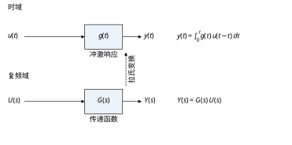
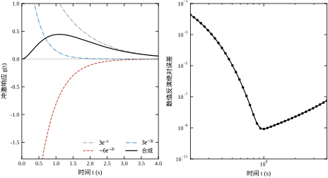
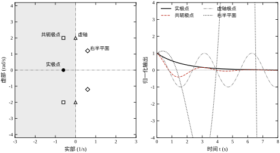
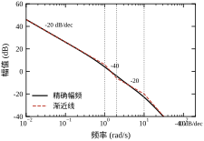
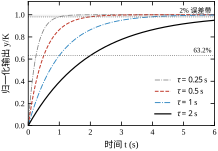

一只电阻与一只电容串联，电容电压 y(t) 为输出，电源电压 u(t) 为输入。基尔霍夫电压定律给出
RC\,\frac{\mathrm{d}y(t)}{\mathrm{d}t}+y(t)=u(t) \tag{1-1}
若 u(t) 是单位阶跃、初值为零，分离变量即可解出 y(t)=1-e^{-t/(RC)}，时间常数 \tau=RC。这一段推导在任何一本电路教材的前三页都能找到，问题不在这里。问题在于真实的电源电压既不是阶跃，也不是正弦，而是一串带纹波、带延迟、偶尔被切掉的脉冲。此时式 (1-1) 的解要写成卷积
y(t)=\int_0^t \frac{1}{\tau}e^{-(t-\theta)/\tau}u(\theta)\,\mathrm{d}\theta \tag{1-2}
每换一种输入，就要重算一次积分；输入带 20 ms 延迟，积分上限与分段点全部要改；两个 RC 级联，卷积要算两次。工程师真正想要的是：不管输入长什么样，先把对象本身的性质固定下来，输入来了只做一次乘法。拉普拉斯变换提供的正是这件事。
把式 (1-1) 两边做拉普拉斯变换，零初始条件下微分变成乘 s：
(RC\,s+1)\,Y(s)=U(s)\quad\Longrightarrow\quad G(s)=\frac{Y(s)}{U(s)}=\frac{1}{RC\,s+1} \tag{1-3}
对象的信息全部压缩进一个分式。输入是阶跃、是脉冲、是延迟脉冲，都只是 U(s) 换一个表达式，G(s) 不动。级联两个 RC，只需把两个分式相乘。时域里最难的卷积，在 s 域里是最简单的乘法，这是本章全部内容的出发点。
用第 1.6 节的脚本可以把这件事量化。取 \tau=0.5 s、K=2，用前向欧拉法以 10^{-4} s 步长积分式 (1-1)，与解析解 y=2(1-e^{-2t}) 相比，全过程最大偏差 7.36\times10^{-5}，终值 1.999909；同样的对象用式 (1-3) 的解析式，10%→90% 上升时间 1.0984 s，与理论值 \tau\ln 9=1.0986 s 只差 0.0002 s。两条路径给出同一条曲线，但一条要写积分器，另一条只需写两个系数。
控制工程里反复出现的时域运算只有三类：微分与积分、卷积、纯延迟。它们在 s 域中的对应关系构成了本书最常用的一张对照表（表 1-1）。这张表值得背下来，因为后面每一章的推导都在用它。
表 1-1 时域运算与复频域的对应
| 时域运算 | s 域对应 | 典型场合 |
|---|---|---|
| \dfrac{\mathrm{d}y}{\mathrm{d}t} | sY(s)-y(0) | 力学、电路的状态方程 |
| \displaystyle\int_0^t y(\theta)\,\mathrm{d}\theta | Y(s)/s | 积分器、位置由速度积分 |
| y(t)=\displaystyle\int_0^t g(\tau)u(t-\tau)\,\mathrm{d}\tau | Y(s)=G(s)U(s) | 线性对象对任意输入的响应 |
| u(t-T_d) | e^{-T_d s}U(s) | 传输延迟、计算延迟、采样保持 |
表 1-1 的三行半解释了为什么控制理论偏爱 s 域：微积分被降级为乘除，卷积被降级为乘法，延迟被降级为指数因子。降级之后，串联、并联、反馈这些结构关系全部变成有理分式的四则运算，而有理分式的零点、极点又能直接对应到响应形状。第 2 章的方块图化简、第 37 章的时域指标换算、第 41 章的频域裕度，都是在这张表上做文章。
需要提醒的是，这张表的前提是零初始条件。若 y(0)\neq0，微分性质必须带上 -y(0) 项，传递函数的定义也随之失效——严格说，传递函数只描述“从平衡点出发的增量关系”。第 1.5 节会把这条限制展开成三个现场故障案例。
传递函数不是数学玩具，它在工程上有四个具体用途，每个都对应一类现场动作。
第一是标定参数。一阶对象的阶跃响应在 t=\tau 处到达终值的 63.2%，在 t=3\tau 处到达 95.0%，读取这两个点就能反推 \tau；终值除以阶跃幅值就是直流增益 K。本书第 1.6 节给出实测：\tau=0.5 s 的对象，2% 调节时间 1.9553 s，与 -\tau\ln 0.02=1.956 s 一致。工程师不需要知道拉普拉斯是什么，只需要知道“读 63.2% 那个点”。
第二是判断稳定性。线性定常系统的稳定性只取决于极点位置：全部极点在左半开平面则渐近稳定，有极点在右半平面则发散，虚轴上的单极点对应等幅振荡。这条判据把“系统会不会炸”化归为“解一个多项式方程”，第 38 章的 Routh 判据与第 39 章的 Nyquist 判据都是它的工程化版本。
第三是换算性能指标。一阶对象的上升时间约 2.2\tau，调节时间约 4\tau（2% 带）；二阶欠阻尼对象的超调量只由阻尼比决定，M_p=e^{-\pi\zeta/\sqrt{1-\zeta^2}}。反过来，给定“超调不超过 10%”，可以直接解出 \zeta\ge0.59，再去配置极点。第 37 章会把这些换算整理成表，本章只给出它们的来源。
第四是组合与分解。串联取乘积、并联取和、反馈取 G/(1+GH)，复杂回路可以逐层化简成一个等效传递函数。第 2 章的梅森增益公式是这件事的一般化；现场调试时“先看内环再看外环”的习惯，本质也是按传递函数逐层分解。
本章的一句话核心是：拉普拉斯变换是一套坐标变换，它把“微分、卷积、延迟”三种难算的时域运算，换成“乘 s、乘分式、乘指数”三种好算的代数运算；传递函数就是对象在这套坐标下的身份证。这句话有两个关键词：坐标变换与身份证。坐标变换意味着信息没有丢失，只是换了写法；身份证意味着它只记录对象自身的性质，与输入无关。
围绕这句话，本章按七节展开。§1.2 给出定义、收敛域与常用变换对，把“身份证”的格式定下来；§1.3 推导性质、初值终值定理、部分分式逆变换，并说明极点位置如何决定响应形状；§1.4 处理离散对应与数值实现，重点是指数因子 e^{-T_d s} 怎么落到 z 域、高阶多项式为什么不能直接求根；§1.5 划出适用边界，说明零初始条件、零极点相消、非线性这三处最容易翻车；§1.6 用五张图与一个脚本做数值验证，所有数字可复现；§1.7 收束成十条常见错误。
读本章时不必纠结存在性定理的证明细节，但必须记住两件事：收敛域决定变换是否存在，极点位置决定响应是否收敛。前者是数学前提，后者是工程结论，两者混为一谈是初学者最常见的错误。
把 §1.1.1 的例子推进一步，取 \tau=0.5 s、K=2，输入改为一个延迟 0.2 s、宽 0.5 s 的矩形脉冲
u(t)=u(t-0.2)-u(t-0.7)
也就是 0.2 s 时刻跳上去、0.7 s 时刻跳下来。这个输入在实验台上极其常见：气缸推一下再退回、阀门开半程再关回、加热器通电一段时间再断电。三种算法分别怎么做？
时域分段法。把时间轴切成三段，每段内输入是常数或零，分别求解再拼接。t<0.2 s 时输出为零；0.2\le t<0.7 s 时输入为 1，输出从零开始按 2(1-e^{-2(t-0.2)}) 上升；t\ge0.7 s 时输入回到零，输出从上一段的终点自由衰减。第三段的表达式要把前一段的终值作为初值，写出来是 2\left[e^{-2(t-0.7)}-e^{-2(t-0.2)}\right]。每增加一个跳变，就要多切一段、多解一次初值问题。
卷积法。直接套式 (1-2)，但积分上限与分段点都依赖 t 落在哪一段，实际计算时仍然要分三段讨论积分区间。卷积法省掉了“解微分方程”，却没有省掉“分情况”。
s 域法。输入的变换是两个延迟阶跃之差，U(s)=\left(e^{-0.2s}-e^{-0.7s}\right)/s，于是
Y(s)=\frac{2}{0.5s+1}\cdot\frac{e^{-0.2s}-e^{-0.7s}}{s}
逆变换只需对 \dfrac{2}{s(0.5s+1)} 查表得 2(1-e^{-2t})，再把两个指数因子分别翻译成时移，两项相减即为答案。输入改变时，G(s) 一个字都不用改，只换 U(s) 的分子；跳变有几个，就多几个指数因子，自动对应时域的分段结构。
三种算法的差别不在于“能不能算对”，而在于改动成本。对象不变、只换输入时，时域法与卷积法都要重新分情况、重新定积分限，s 域法只改一行分子。工程上一天要试十几种输入波形，这个差别就是几小时与几分钟的差别。
还有一条附带的好处：脉冲响应可以写成两个阶跃响应之差，这正说明线性系统的叠加原理在 s 域里是“加法”，不需要额外记忆。
描述一个线性对象至少有三套语言，本书选择从拉普拉斯开始，是有取舍的。
状态空间最通用：时变、多变量、非线性、非零初值都能写，数值计算也最稳。代价是它把对象拆成一阶方程组，初学者看到的是一堆矩阵，很难一眼看出“这个系统会不会振、振多快”。状态空间适合做计算与理论证明，不适合作为第一门语言。
频域最直观：Bode 图上一条曲线就能读出带宽、裕度、谐振峰。代价是它只描述稳定系统的稳态正弦响应，瞬态过程、初值影响、不稳定对象都不在它的覆盖范围内，而且它本身是从 s=j\omega 这个替换来的——没有 s 域，频域无从定义。
拉普拉斯恰好位于两者之间：它保留“一个分式对应一个对象”的整体视图，又能通过部分分式直接给出时域表达式，还能通过 s=j\omega 退化成频域。它是唯一一套可以同时向三个方向延伸的语言：向结构延伸得到方块图与梅森公式（第 2 章），向数值延伸得到状态空间（第 3 章），向频率延伸得到 Bode 与 Nyquist（第 41、39 章）。
本书的整体顺序也据此安排：先用 s 域把单回路的语言立起来，再讲结构化简、离散化、辨识、性能指标、频域设计，最后才进入非线性、现代控制与工程应用。这条路线不是唯一正确的路线，但它与现场工程师的既有知识（电路、力学、微分方程）衔接最顺，也最容易在每一章末尾落成可执行的步骤。
需要提前说明的是，这套语言有明确的适用范围。线性、定常、集中参数、零初始条件，四个前提缺一不可，§1.5 会把每一处边界展开成具体故障。先学一套能覆盖八成问题的语言，再学它在哪些两成问题上失效，比一开始就追求万能工具更有效。
对定义在 t\ge0 上的信号 f(t)，单边拉普拉斯变换定义为
F(s)=\mathcal{L}\{f(t)\}=\int_{0^{-}}^{\infty}f(t)\,e^{-st}\,\mathrm{d}t,\qquad s=\sigma+j\omega \tag{1-4}
积分下限取 0^{-} 而不是 0^{+}，是为了让 t=0 处的冲激也被计入。控制工程只关心“从投入运行那一刻起”的行为，所以用单边变换；双边变换留给信号处理与系统理论。
式 (1-4) 是一个含复参数 s 的广义积分，它并非对任意 f(t) 都收敛。使积分绝对收敛的 s 的集合称为收敛域（region of convergence, ROC）。判据是 f(t) 的指数阶条件：若存在实数 \sigma_0 与常数 M，使 |f(t)|\le Me^{\sigma_0 t} 对所有 t\ge0 成立，则积分在 \mathrm{Re}(s)>\sigma_0 内绝对收敛。对工程中常见的分段连续、指数阶信号，这个条件几乎总成立；真正需要注意的不是“是否存在”，而是“边界在哪里”。
收敛域的边界对有理变换函数有直接的工程含义：收敛域右边界就是最右侧极点的实部。例如 1/(s+a) 的收敛域是 \mathrm{Re}(s)>-a，极点恰在 -a。这条对应关系解释了两件工程事实：一是因果稳定系统的极点必须全在左半平面，此时收敛域包含虚轴；二是同一个 F(s) 配上不同的收敛域会对应不同的时域信号，1/(s+a) 在 \mathrm{Re}(s)>-a 下是 e^{-at}u(t)，在 \mathrm{Re}(s)<-a 下是 -e^{-at}u(-t)。控制工程只处理因果信号，因此本书此后不再逐条标注收敛域，但“极点位置决定收敛”这条线索会一直保留。
表 1-2 列出工程中最常用的八个变换对。它们不是需要死记的公式，而是“零件库”——任何有理分式都能拆成这几项的线性组合，逆变换就变成了查表加系数。
表 1-2 八个常用拉普拉斯变换对
| 时域 f(t)，t\ge0 | 变换 F(s) | 收敛域 | 工程含义 |
|---|---|---|---|
| \delta(t) | 1 | 全平面 | 冲激，冲激响应即 G(s) 本身 |
| 1 | \dfrac{1}{s} | \mathrm{Re}(s)>0 | 阶跃，积分器的输入 |
| t | \dfrac{1}{s^2} | \mathrm{Re}(s)>0 | 斜坡，速度指令 |
| e^{-at} | \dfrac{1}{s+a} | \mathrm{Re}(s)>-a | 一阶惯性、指数衰减 |
| t\,e^{-at} | \dfrac{1}{(s+a)^2} | \mathrm{Re}(s)>-a | 重极点，临界阻尼 |
| \sin\omega t | \dfrac{\omega}{s^2+\omega^2} | \mathrm{Re}(s)>0 | 等幅振荡 |
| \cos\omega t | \dfrac{s}{s^2+\omega^2} | \mathrm{Re}(s)>0 | 等幅振荡 |
| e^{-at}\sin\omega t | \dfrac{\omega}{(s+a)^2+\omega^2} | \mathrm{Re}(s)>-a | 衰减振荡，欠阻尼 |
表 1-2 的第三列与第四列同样重要。收敛域告诉你这个信号“能不能存在于稳定系统”，工程含义告诉你这个分式在回路里扮演什么角色。例如 1/(s+a) 既是“一阶惯性”，也是“指数衰减”，还是“一阶低通滤波器的传递函数”——三种说法指的是同一个数学对象，只是观察角度不同。
表 1-2 看起来需要背八行，实际上只需记住 \delta(t)、1(t)、e^{-at}、\sin\omega t 四行，另外四行可以用三条性质推出来。掌握“怎么推”比记住“是什么”更抗遗忘。
复位移性质。若 \mathcal{L}\{f(t)\}=F(s)，则
\mathcal{L}\left\{e^{-at}f(t)\right\}=F(s+a)
推导只需把 e^{-at} 并进指数，积分变成 \int_0^\infty f(t)e^{-(s+a)t}\mathrm{d}t，正是 F 在 s+a 处的取值。这条性质的工程读法是“乘衰减指数等于把 s 平面整体左移”。表 1-2 的最后一行正是 \sin\omega t 的左移版本：\sin\omega t 的变换是 \omega/(s^2+\omega^2)，把 s 换成 s+a 就得到 \omega/[(s+a)^2+\omega^2]。同理，e^{-at}\cos\omega t 的变换是 (s+a)/[(s+a)^2+\omega^2]。
s 域求导性质。对 F(s) 关于 s 求导，导数可以穿过积分号：
\mathcal{L}\{t\,f(t)\}=-\frac{\mathrm{d}F(s)}{\mathrm{d}s}
由 \mathcal{L}\{1\}=1/s 对 s 求导得 -1/s^2，取负号即 \mathcal{L}\{t\}=1/s^2；由 \mathcal{L}\{e^{-at}\}=1/(s+a) 求导得 -1/(s+a)^2，取负号即 \mathcal{L}\{t e^{-at}\}=1/(s+a)^2。这条性质解释了重极点的来历：分母上的重根，对应时域里多乘一个 t。
尺度变换性质。若 \mathcal{L}\{f(t)\}=F(s)，则对 a>0
\mathcal{L}\left\{f\!\left(\frac{t}{a}\right)\right\}=aF(as)
换元 \tau=t/a 即可验证。它的物理含义是“时间轴压缩 a 倍，频率轴展宽 a 倍”：同一个动作做得越快，包含的高频成分越多。这条性质在第 4 章讨论采样时还会用到——把连续信号在时间上离散化，本质上是在频域上做周期延拓。
三条性质合起来，把表 1-2 从“八条要背的公式”压缩成“四条基本行加三条生成规则”。工程上遇到表里没有的组合（例如 t^2e^{-at}、e^{-at}\cos\omega t），也可以现场推出来，而不必去翻手册。
传递函数是有量纲的，这一点在公式里看不出来，在参数表里必须写清楚。G(s)=Y(s)/U(s) 的量纲是“输出量纲除以输入量纲”：电压到转速是 V/(rad/s)，阀位到温度是 ℃/%，电压到电压则是无量纲。极点的量纲固定是 1/s（rad/s），零点也是 1/s，而增益 K_z 的量纲由零极点个数的差决定。
量纲检查能抓住三类错误。第一类是加减错误：分子里 b_1s+b_0 的两项必须同量纲，若 b_1 用 ms、b_0 用 s，两项相差 10^3 倍，系数表看起来正常，极点却全错。第二类是标定错误：把 rpm 当 rad/s 代入，增益会差 2\pi/60\approx0.105 倍，闭环带宽跟着差一个量级。第三类是单位换算错误：温度用 ℃ 还是 K、压力用 bar 还是 MPa，差值都是常数偏置，混用后稳态工作点直接偏移。
相对阶 n-m 是另一个容易被忽视的量。它有三个等价说法：频域上高频幅值按 -20(n-m) dB/dec 衰减；时域上阶跃响应的前 n-m-1 阶导数在 t=0^{+} 处为零；物理上输出对输入的响应存在“起步迟钝”。一阶对象相对阶为 1，阶跃响应在 t=0 处值连续而斜率不为零；二阶对象相对阶为 2，阶跃响应在 t=0 处斜率也为零，起步是“平的”。现场看到一条阶跃响应曲线起步就带折角，通常说明模型相对阶取小了。
m>n 的传递函数在物理上不可实现，因为它要求对输入求导。数学上它当然存在，甚至可以算出响应，但那个响应依赖于输入的瞬时变化率，而任何实际执行器都只能输出连续量。遇到辨识结果给出 m>n，正确的反应是“数据或模型结构有问题”，而不是“这个对象比较特殊”。
m=n 的情形对应直通项 D\neq0，输入一变输出立刻跟着变，中间没有惯性。控制通道里几乎不会出现（电机、阀门、加热器都有惯性），测量通道里却很常见（分压电路、带增益的传感器）。区分办法很简单：给一个阶跃，看输出在第一个采样点是否已经跳变。跳变说明有直通，模型里必须保留 D 项，否则高频段的相位预测会差 90^{\circ}。
设线性定常系统在零初始条件下，输入 u(t)、输出 y(t) 的拉普拉斯变换分别为 U(s)、Y(s)，则传递函数定义为
G(s)=\frac{Y(s)}{U(s)}\Big|_{\text{零初始条件}}=\frac{b_m s^m+b_{m-1}s^{m-1}+\cdots+b_0}{a_n s^n+a_{n-1}s^{n-1}+\cdots+a_0},\qquad m\le n \tag{1-5}
分子分母互质、首项归一化后，G(s) 由 n+m+1 个系数唯一确定。m<n 称为严格真（strictly proper），m=n 称为真（proper），m>n 在物理上不可实现——它意味着输出对输入求了导，任何真实执行器都跟不上。工程上绝大多数对象是严格真的，只有测量通道里会出现 m=n（例如带零点的高通滤波）。
同一个对象有三种等价写法，选哪种取决于要回答的问题：
三者可以互相转换，转换本身不损失信息（除零极点相消的情形，见 §1.5.3）。状态空间到传递函数的桥是
G(s)=\boldsymbol{C}(s\boldsymbol{I}-\boldsymbol{A})^{-1}\boldsymbol{B}+D=\frac{\boldsymbol{C}\,\mathrm{adj}(s\boldsymbol{I}-\boldsymbol{A})\,\boldsymbol{B}+D\det(s\boldsymbol{I}-\boldsymbol{A})}{\det(s\boldsymbol{I}-\boldsymbol{A})} \tag{1-6}
分母 \det(s\boldsymbol{I}-\boldsymbol{A}) 就是特征多项式，它的根就是极点。这条式子有两个用途：一是从状态空间算传递函数，二是反过来确认“传递函数的极点一定是 \boldsymbol{A} 的特征值的一个子集”——被约掉的那部分特征值，正是第 3 章能控能观性讨论的对象。
拿本章反复使用的三阶对象做一次完整换算，可以看清三种形式的对应关系。G(s)=6/[(s+1)(s+2)(s+3)] 展开分母得 s^3+6s^2+11s+6，于是
四个数字（K_z=6、K_{dc}=1、极点 [-1,-2,-3]、阶跃终值 1）互相印证：K_z 与 K_{dc} 差 6 倍，差的正是三个极点模长的乘积 1\times2\times3。这不是巧合——对无零点的对象，K_{dc}=K_z/\prod|p_j|。把这条关系当成检查工具：算出 K_z 与 K_{dc} 之后，用极点模长乘积验算一遍，能在建模阶段抓出系数抄错、符号写反两类错误。
把式 (1-5) 的分子分母因式分解，得到零极点增益形式：
G(s)=K_z\,\frac{\prod_{i=1}^{m}(s-z_i)}{\prod_{j=1}^{n}(s-p_j)} \tag{1-7}
z_i 为零点，p_j 为极点，K_z=b_m/a_n 称为根轨迹增益。零极点形式的价值在于它把“形状”与“尺度”分开了：极点决定响应的模式（指数衰减、振荡、发散），零点决定各模式的配比，K_z 只做整体缩放。
工程上同时存在三种“增益”，混用是现场事故的高发区。表 1-3 给出它们的定义与判别方法。
表 1-3 三种增益的定义与判别
| 口径 | 定义 | 适用对象 | 怎么读 |
|---|---|---|---|
| 根轨迹增益 K_z | 式 (1-7) 中的 b_m/a_n | 任意 | 看最高次项系数之比 |
| 直流增益 K_{dc} | \lim_{s\to0}G(s) | 不含积分环节 | 阶跃响应的终值除以阶跃幅值 |
| 速度增益 K_v | \lim_{s\to0}sG(s) | 含一个积分环节 | 斜坡响应的稳态误差倒数 |
以图 1-4 所用对象 G(s)=10(s+2)/[s(s+1)(s+10)] 为例：K_z=10，分母含 s 所以直流增益为无穷，而 K_v=\lim_{s\to0}sG(s)=10\times2/(1\times10)=2。三种口径给出三个完全不同的数字（10、\infty、2），如果标定时把 K_z=10 当成“阶跃终值”，算出来的稳态误差会差 5 倍。判据很简单：先看分母有没有 s，再看阶跃响应的终值是否有限。
增益还带量纲。位置环的增益单位是 1/s 或 V/mm，速度环是 V/(mm/s)，温度回路是 %/℃。写传递函数时把单位一并写在参数表里，比在公式里补单位更可靠。
例 1-1（直流电机）。电枢电压 u、电流 i、转速 \omega，电枢电感 L、电阻 R、反电动势系数 K_e、转矩系数 K_t、转动惯量 J、粘性阻尼 b。电气方程与机械方程分别为
L\frac{\mathrm{d}i}{\mathrm{d}t}+Ri+K_e\omega=u,\qquad J\frac{\mathrm{d}\omega}{\mathrm{d}t}+b\omega=K_t i \tag{1-8}
零初始条件下做拉普拉斯变换，消去 I(s)：
G_{\omega}(s)=\frac{\Omega(s)}{U(s)}=\frac{K_t}{(Ls+R)(Js+b)+K_tK_e} \tag{1-9}
分母展开后是 LJs^2+(Lb+RJ)s+(Rb+K_tK_e)，一个标准二阶系统。电气时间常数 L/R 通常比机械时间常数 J/b 小一到两个数量级，所以工程上常把电气动态忽略，降为一阶 K_t/(RJs+Rb+K_tK_e)。这个降阶是否安全，取决于第 37 章的“主导极点”判据：被忽略的极点实部至少要比保留的极点远 5 倍。
例 1-2（弹簧-质量-阻尼）。质量 m、阻尼 c、刚度 k，外力 F 为输入、位移 x 为输出：
m\ddot{x}+c\dot{x}+kx=F\quad\Longrightarrow\quad G_x(s)=\frac{1}{ms^2+cs+k}=\frac{1/k}{\dfrac{s^2}{\omega_n^2}+\dfrac{2\zeta}{\omega_n}s+1} \tag{1-10}
其中 \omega_n=\sqrt{k/m}、\zeta=c/(2\sqrt{km})。式 (1-10) 说明：刚度决定“有多快”，阻尼决定“有多稳”，质量同时影响两者。这三个物理量与 §1.3 的极点位置一一对应，是后续所有二阶系统结论的物理来源。
两个例子都出现了“二阶分母”。这不是巧合：任何由两个储能元件（电感与电容、质量与弹簧）耦合而成的系统，其传递函数都是二阶的。阶次等于独立储能元件的个数，这条规律在建模阶段可以用来检查传递函数是否漏项。
式 (1-10) 里的 \omega_n 与 \zeta 是从力学量定义的，换成电学量同样成立。以 R、L、C 串联、电容电压 u_C 为输出、电源电压 u 为输入为例，回路方程与电容的伏安关系给出
LC\,\frac{\mathrm{d}^2u_C}{\mathrm{d}t^2}+RC\,\frac{\mathrm{d}u_C}{\mathrm{d}t}+u_C=u
零初始条件下取变换，得到
G(s)=\frac{1}{LCs^2+RCs+1}=\frac{\omega_n^2}{s^2+2\zeta\omega_n s+\omega_n^2},\qquad \omega_n=\frac{1}{\sqrt{LC}},\quad \zeta=\frac{R}{2}\sqrt{\frac{C}{L}}
与式 (1-10) 对照可见：m\leftrightarrow L、c\leftrightarrow R、k\leftrightarrow 1/C，三组量一一对应。电感对应质量（阻碍电流变化），电容对应弹簧（储存能量并产生回复力），电阻对应阻尼（耗散能量）。这张对应表在后续讲机电系统建模时会反复用到，读者不必分别记两套公式。
取 L=10 mH、C=100 μF，则 \omega_n=1/\sqrt{10^{-2}\times10^{-4}}=1000 rad/s，即无阻尼振荡频率约 159 Hz。此时 \sqrt{C/L}=0.1，于是 \zeta=0.05R：R=10 Ω 给出 \zeta=0.5，超调 16.3%；R=20 Ω 给出 \zeta=1，临界阻尼、无超调；R=40 Ω 给出 \zeta=2，过阻尼、响应变慢。三个数字都可以用 §1.3.7 的公式直接核对。
这个例子还说明一件事：阻尼比不是独立参数，它由 R、L、C 的组合决定。想让系统“更稳”，可以增大 R，但增大 R 会降低效率、增加发热；想保持 \omega_n 不变而只改 \zeta，只能动 R。工程上的“调阻尼”往往不是加电阻，而是加反馈——这就是第 37 章之后闭环设计要解决的问题：用控制器人为地改变等效阻尼，而不牺牲主回路效率。
若把输出改为电感电流 i，传递函数变成 G_i(s)=Cs/(LCs^2+RCs+1)，分子多了一个 s。这个 s 来自电容的微分关系 i=C\,\mathrm{d}u_C/\mathrm{d}t：要算电流，得先把电容电压求导。它在频域上表现为低频段幅值以 +20 dB/dec 上升，在时域上表现为阶跃电压输入下电流从零跳起、随后衰减回零（电容隔直）。同一个电路，换一个输出量，零点位置就变了，极点不变——这再次印证“极点管存亡、零点管形状”。
拉普拉斯变换是线性运算：\mathcal{L}\{af(t)+bg(t)\}=aF(s)+bG(s)。这条性质保证“分解—分别求解—叠加”的流程成立，也是部分分式逆变换的理论依据。
微分性质。对 f(t) 分部积分：
\mathcal{L}\{f'(t)\}=\int_0^{\infty}f'(t)e^{-st}\,\mathrm{d}t=\big[f(t)e^{-st}\big]_0^{\infty}+s\int_0^{\infty}f(t)e^{-st}\,\mathrm{d}t=sF(s)-f(0^{-}) \tag{1-11}
重复使用可得 n 阶导数
\mathcal{L}\{f^{(n)}(t)\}=s^nF(s)-s^{n-1}f(0^{-})-s^{n-2}f'(0^{-})-\cdots-f^{(n-1)}(0^{-}) \tag{1-12}
式 (1-12) 是“微分方程代数化”的全部秘密：每求一次导，就多乘一个 s，同时吐出该阶初值。零初始条件下所有初值项消失，n 阶导数对应 s^n，微分方程立刻退化成多项式方程。对式 (1-5) 的微分方程两边做变换，整理即得传递函数，分子分母的系数一一对应，不需要任何技巧。
积分性质。设 g(t)=\int_0^t f(\theta)\,\mathrm{d}\theta，则 g'(t)=f(t)、g(0)=0，代入式 (1-11) 得 F(s)=sG(s)，即
G(s)=\frac{F(s)}{s} \tag{1-13}
积分在 s 域就是除以 s。这条性质解释了为什么“位置是速度的积分”在框图里表现为串联一个 1/s，也解释了为什么含积分环节的开环系统对阶跃输入没有稳态误差——1/s 在 s=0 处有一个极点，直流增益趋于无穷。
把微分与积分性质合起来看，可以得到一条实用的口诀：s 是微分算子，1/s 是积分算子，s=0 对应“直流/稳态”，s\to\infty 对应“瞬时/高频”。后面判断初值时取 s\to\infty、判断终值时取 s\to0，用的都是这条口诀。
延迟性质。若 f(t) 的变换为 F(s)，则右移 T_d 并置零：
\mathcal{L}\{f(t-T_d)\,u(t-T_d)\}=e^{-T_d s}F(s),\qquad T_d>0 \tag{1-14}
证明只需换元 \tau=t-T_d，积分限从 T_d 平移到 0，多出的因子 e^{-T_d s} 来自 e^{-s(\tau+T_d)}。这条性质在工程上极其重要：输送带、管道、网络、计算周期造成的纯延迟，在 s 域里只是一个乘性因子，不改变极点，只改变相位。第 41 章会看到，纯延迟的相位是 -\omega T_d，随频率线性下降、无下界，因此它是破坏稳定裕度的头号杀手；第 47 章专门讨论如何用 Smith 预估器对付它。
注意 e^{-T_d s} 不是有理函数，无法写成有限阶多项式之比。工程上要么保留指数因子做频域分析，要么用 Padé 近似把它换成有理分式（一阶 Padé 为 (1-T_ds/2)/(1+T_ds/2)），代价是在高频段相位失真。这个取舍在第 47 章展开。
延迟在频域上的代价可以算出来。令 s=j\omega，e^{-j\omega T_d} 的模恒为 1、相位为 -\omega T_d，于是延迟不改变任何频率上的幅值，只按频率线性地扣相位。T_d=0.1 s 的延迟，在 \omega=1 rad/s 处只扣 0.1 rad（约 5.7^{\circ}），在 \omega=10 rad/s 处扣 1 rad（约 57.3^{\circ}）。这就是为什么大延迟对象“低频段看起来很稳、一提快速性就振”：穿越频率一旦上移，相位被扣掉的量按比例增加，裕度很快耗尽。缓解办法只有两条：降低穿越频率（牺牲快速性），或用预估器把延迟“移出”回路（第 47 章）。
卷积定理。设 y(t)=\int_0^t g(\tau)u(t-\tau)\,\mathrm{d}\tau，则
Y(s)=G(s)U(s) \tag{1-15}
证明把二重积分写成 \int_0^\infty\!\!\int_0^t g(\tau)u(t-\tau)e^{-st}\,\mathrm{d}\tau\,\mathrm{d}t，交换积分次序并令 \theta=t-\tau，被积函数分解为 g(\tau)e^{-s\tau}\cdot u(\theta)e^{-s\theta}，两个积分恰好是 G(s) 与 U(s)。图 1-1 把这个对应画成了上下两行：时域一行是“冲激响应与输入做卷积”，s 域一行是“两个变换相乘”，中间用拉氏变换连接。

式 (1-15) 有三个直接推论。第一，G(s) 就是冲激响应 g(t) 的变换，因此“传递函数”与“冲激响应”是同一对象在两种坐标下的写法；第二，串联系统的传递函数等于各环节相乘，因为卷积可以逐级嵌套；第三，任意输入的响应都可以由 G(s) 与 U(s) 相乘再逆变换得到，不必每次重算积分。第 1.6 节的数值实验验证了这一点：把 g(t)=4e^{-2t} 与单位阶跃做离散卷积，与解析解 2(1-e^{-2t}) 相比，最大偏差 2.74\times10^{-3}，占满量程 0.137%，残差主要来自 t=0 附近的离散化。
这两个定理把 s 域的极限直接对应到时域的端点，是工程上算稳态误差、查初值跳变最常用的工具。它们的成立条件比公式本身更重要。
初值定理：若 f(t) 在 t=0^{+} 处有极限，且 F(s) 为真分式，则
f(0^{+})=\lim_{s\to\infty}sF(s) \tag{1-16}
终值定理：若 sF(s) 的所有极点都在左半开平面（允许在原点有单极点），则
f(\infty)=\lim_{s\to0}sF(s) \tag{1-17}
式 (1-17) 的条件常被忽略，后果是得到“看起来合理但完全错误”的数字。两个反例足以说明问题。其一，G(s)=1/(s-1) 受单位阶跃激励，Y(s)=1/[s(s-1)]，sY(s)=1/(s-1) 在右半平面有极点，定理不成立；此时 \lim_{s\to0}sY(s)=-1，而实际响应 y(t)=e^{t}-1 发散到无穷。其二，积分器 G(s)=1/s 受阶跃激励，Y(s)=1/s^2，sY(s)=1/s 在原点有极点（不是单极点条件里的“允许”情形，因为 Y 本身在原点有二阶极点），\lim_{s\to0}sY(s)=1，而实际响应 y(t)=t 无界。
正确的用法是：先检查 sF(s) 的极点，再取极限。工程上这条检查等价于“先确认闭环稳定，再算稳态误差”，第 42 章会把它写成一张按输入类型（阶跃、斜坡、抛物线）分类的表。
数值验证放在第 1.6 节。取 G(s)=(3s+2)/(s^2+3s+2)，单位阶跃下 Y(s)=(3s+2)/[s(s+1)(s+2)]，解析解 y(t)=1+e^{-t}-2e^{-2t}。初值定理给出 \lim_{s\to\infty}sY(s)=3\times10^{-6}（用 s=10^{6} 近似），解析解在 t=0 处为 0，两者一致；终值定理给出 1.000000，t=12 s 后 200 点均值 1.000007，误差 7\times10^{-6}。
逆变换的工程做法不是复变积分，而是拆成表 1-2 里的零件。设 Y(s)=B(s)/A(s) 为真分式，按 A(s) 的根分三种情形。
互异实极点。若 A(s)=\prod_{j}(s-p_j) 且 p_j 互异，则
Y(s)=\sum_{j}\frac{r_j}{s-p_j},\qquad r_j=\lim_{s\to p_j}(s-p_j)Y(s) \tag{1-18}
逆变换为 y(t)=\sum_j r_j e^{p_jt}。以 6/[(s+1)(s+2)(s+3)] 为例，三个留数依次为 3、-6、3，于是 g(t)=3e^{-t}-6e^{-2t}+3e^{-3t}。图 1-5 左图把三个分量与合成曲线画在一起：三条指数曲线单独看都很平缓，合成后却在 t\approx0.45 s 处出现一个峰值，这是正负分量相互抵消的结果。

重极点。若 A(s) 含 (s-p)^m，则展开式中出现 \dfrac{r_1}{s-p}+\dfrac{r_2}{(s-p)^2}+\cdots+\dfrac{r_m}{(s-p)^m}，逆变换对应 r_1e^{pt}+r_2te^{pt}+\cdots+r_m\dfrac{t^{m-1}}{(m-1)!}e^{pt}。重极点的时域特征是“多项式乘指数”，响应先被 t^{m-1} 抬起来再被指数压下去，临界阻尼二阶系统 1/(s+\omega_n)^2 就是 m=2 的情形。
共轭复极点。若 p_{1,2}=-\sigma\pm j\omega_d，对应留数也共轭，r_{1,2}=|r|e^{\pm j\varphi}，则
y_{1,2}(t)=2|r|e^{-\sigma t}\cos(\omega_d t+\varphi) \tag{1-19}
式 (1-19) 是全部振荡响应的原型：实部 -\sigma 决定包络衰减，虚部 \omega_d 决定振荡频率，留数的幅角决定初相。三者互相独立，可以分别调整，这个“三旋钮”结构是第 37 章二阶系统指标换算的基础。
若 Y(s) 为真分式但分子分母同阶（m=n），先做多项式除法取出常数项 D，它对应时域的冲激 \delta(t)；严格真分式没有这一项。工程上 D\neq0 意味着输入到输出存在直通，常见于测量通道，控制通道几乎不会出现。
把式 (1-18) 与式 (1-19) 合起来看，可以得到本章最重要的结论：响应的每一个模式由且仅由一个极点决定，零点与增益只调整各模式的权重。表 1-4 给出四类极点对应的时域形态。
表 1-4 四类极点位置与时域形态
| 极点位置 | 时域项 | 形态 | 稳定性 |
|---|---|---|---|
| p=-\sigma<0（实） | e^{-\sigma t} | 单调衰减，时间常数 1/\sigma | 渐近稳定 |
| p=-\sigma\pm j\omega_d | e^{-\sigma t}\cos(\omega_d t+\varphi) | 衰减振荡，包络时间常数 1/\sigma | 渐近稳定 |
| p=\pm j\omega_d | \cos(\omega_d t+\varphi) | 等幅振荡 | 临界稳定 |
| p=+\sigma>0 | e^{+\sigma t} | 单调或振荡发散 | 不稳定 |
图 1-2 把表 1-4 画成了左右两栏：左栏是 s 平面上的四类极点，右栏是对应的归一化冲激响应。四类极点中只有前两类允许出现在稳定闭环里；虚轴极点在实际系统中也不能接受，因为参数一旦漂移就会滑向右半平面。

极点与二阶指标的定量关系可以写成
\sigma=\zeta\omega_n,\qquad \omega_d=\omega_n\sqrt{1-\zeta^2},\qquad M_p=e^{-\pi\zeta/\sqrt{1-\zeta^2}},\qquad t_p=\frac{\pi}{\omega_d} \tag{1-20}
用本章的二阶对象 G(s)=16/(s^2+1.2s+4) 检验：\omega_n=2、\zeta=0.3，极点为 -0.6\pm1.9079j，式 (1-20) 预测超调 37.23%、峰值时间 1.6463 s；第 1.6 节实测超调 37.13%、峰值时间 1.6463 s。超调差 0.1 个百分点来自数值采样的峰值点未必正好落在连续曲线的极值上，峰值时间则完全吻合。这种“公式预测—仿真验证”的对照，是后续每一章的标准动作。
零点不改变极点位置，但会改变留数，从而改变各模式的权重。一个靠近极点的零点会显著削弱该极点对应的模式，工程上称为“零点抵消”；一个右半平面零点则会让响应先朝反方向走一段，再折回来，这就是非最小相位系统的反向起始现象。第 37 章会给出具体波形，本章只需记住：零点管形状，极点管存亡。
由表 1-4 立即得到线性定常连续系统的稳定性判据：闭环传递函数的全部极点位于左半开平面，则系统渐近稳定。若存在右半平面极点，响应中出现 e^{\sigma t} 项，任何有界输入都会导致无界输出；若极点落在虚轴上，响应不衰减，系统临界稳定，工程上按不稳定处理。
这条判据把“稳定性”化归为“多项式求根”，但高阶多项式求根本身有数值风险（见 §1.4.4），因此工程上发展出两条替代路线：一是不求根、只判断根是否全在左半平面，Routh-Hurwitz 判据与 Jury 判据属于这一类（第 38 章）；二是把 s=j\omega 代入，用开环频率特性判断闭环稳定性，Nyquist 判据属于这一类（第 39 章）。
频率响应本身也是 s 域的一个特例。令 s=j\omega，G(j\omega) 就是系统对正弦输入的稳态响应：幅值放大 |G(j\omega)| 倍，相位滞后 \angle G(j\omega)。这个结论成立的前提仍是“系统稳定”，否则正弦激励下的响应里混有发散项，“稳态”无从谈起。第 41 章会系统展开 |G(j\omega)| 与 \angle G(j\omega) 的作图与读数方法。

图 1-4 的对象是 G(s)=10(s+2)/[s(s+1)(s+10)]，四个转折频率依次由积分环节、极点 -1、零点 -2、极点 -10 产生，折线斜率在 -20、-40、-20、-40 dB/dec 之间切换。低频段 G\approx2/s，幅值为 20\log_{10}(2/\omega)，在 \omega=0.01 rad/s 处为 46 dB；过了 \omega=10 之后相对阶为 2，幅值以 -40 dB/dec 下降。每一个极点让斜率减 20 dB/dec，每一个零点让斜率加 20 dB/dec，这条读图规则比记住任何公式都实用。
最后给出一个只依赖极零点个数的结论：当 \omega\to\infty 时，|G(j\omega)|\sim K_z/\omega^{n-m}，相位趋于 -(n-m)\times90^{\circ}。相对阶 n-m 决定了高频衰减速度，也决定了闭环对高频噪声的抑制能力。这就是为什么“多一个极点”在频域图上表现为“多掉 20 dB/dec”，而“多一个零点”表现为“少掉 20 dB/dec”——图 1-4 的四段折线正是这条规律的直接体现。
式 (1-20) 的四个公式不是拟合出来的经验式，而是从阶跃响应的解析解里直接读出来的。把推导走一遍，才能知道它们在什么条件下失效。
标准二阶对象写成
G(s)=\frac{\omega_n^2}{s^2+2\zeta\omega_n s+\omega_n^2},\qquad 0<\zeta<1
极点为 -\zeta\omega_n\pm j\omega_d，\omega_d=\omega_n\sqrt{1-\zeta^2}。单位阶跃下 Y(s)=G(s)/s，做部分分式并按表 1-2 逆变换，得到
y(t)=1-\frac{e^{-\zeta\omega_n t}}{\sqrt{1-\zeta^2}}\sin\left(\omega_d t+\varphi\right),\qquad \varphi=\arccos\zeta
这个式子是全部指标的来源。第一项 1 是稳态值，第二项是衰减振荡，包络按 e^{-\zeta\omega_n t} 衰减，振荡频率为 \omega_d。
峰值时间。对 y(t) 求导并令其为零，指数项与三角项相乘后化简，条件退化为 \sin(\omega_d t)=0，第一个非零解是 \omega_d t=\pi，于是 t_p=\pi/\omega_d。这解释了为什么峰值时间只与虚部有关：峰值出现在振荡走完半个周期的时刻。
超调量。把 t_p 代回 y(t)，此时 \sin(\pi+\varphi)=-\sin\varphi=-\sqrt{1-\zeta^2}，负号与前面的负号相消，得到 y(t_p)=1+e^{-\zeta\omega_n t_p}，因此
M_p=e^{-\zeta\omega_n\pi/\omega_d}=e^{-\pi\zeta/\sqrt{1-\zeta^2}}
超调只由阻尼比决定，与 \omega_n 无关。这条结论极其有用：调超调只需要改阻尼，调快慢只需要改自然频率，两个旋钮互不干扰。
调节时间。2\% 误差带要求包络衰减到 0.02，即 e^{-\zeta\omega_n t}=0.02，解得 t_s=-\ln0.02/(\zeta\omega_n)\approx3.91/(\zeta\omega_n)。工程上取 4/(\zeta\omega_n)，多留 2% 的余量。5\% 带对应 3/(\zeta\omega_n)。注意这条估算忽略了正弦项的相位，在 \zeta 很小时偏乐观，实际调节时间可能比估算长 20%–30%。
代入几个常用阻尼比：\zeta=0.3 给出 M_p=37.2\%，\zeta=0.5 给出 16.3\%，\zeta=0.7 给出 4.6\%，\zeta=1 给出 0。工程上常说的“\zeta=0.707 是最佳阻尼”，依据就是 4.6% 的超调在多数场合刚好可接受，而此时上升时间还没有明显变慢。
这些公式的适用条件必须写清楚：标准二阶、无零点、单位阶跃、欠阻尼。对象一旦带零点，超调会明显增大（零点越靠近虚轴越严重）；一旦有积分环节，上述解析解不再成立；一旦 \zeta\ge1，响应单调无超调，t_p 与 M_p 都失去意义。第 37 章会给出带零点与带积分时的修正方法。
本书反复使用两个替换：算稳态时令 s\to0，算频率响应时令 s=j\omega。这两个动作不是口诀，而是有明确条件的。
傅里叶变换可以看作拉普拉斯变换在 \mathrm{Re}(s)=0 上的取值：把 s=j\omega 代入式 (1-4)，得到 \int_0^\infty f(t)e^{-j\omega t}\mathrm{d}t。这个积分存在的条件，正是收敛域包含虚轴。对因果系统而言，收敛域是某个右半平面 \mathrm{Re}(s)>\sigma_0，它包含虚轴当且仅当 \sigma_0<0，也就是全部极点位于左半开平面。稳定性是频率响应存在的前提，这句话的数学内容就在这里。
对稳定系统，还可以把频率响应与冲激响应连起来：G(j\omega) 就是 g(t) 的傅里叶变换。于是“输入正弦、输出同频正弦、幅值乘 |G(j\omega)|、相位加 \angle G(j\omega)”这条结论，可以这样理解：正弦输入在 s 域是虚轴上的两个极点 \pm j\omega，系统响应中由对象极点决定的部分会衰减掉，只剩虚轴极点对应的稳态项，而这一项的系数恰好由 G 在 s=j\omega 处的值决定。
这也解释了为什么不稳定系统没有频率响应。给一个不稳定对象加正弦输入，输出里既有持续的正弦项，又有发散的指数项，后者很快淹没前者，“稳态”根本不存在。此时在 Bode 图上画曲线仍然能画出来（G(j\omega) 作为复函数是有定义的），但那条曲线描述的不是任何可观测的稳态行为。现场用频响仪测不稳定对象，测出来的数据会随时间漂移，正是这个原因。
至于 s\to0，它对应“直流”：G(0) 是正弦频率趋于零时的增益，也就是阶跃输入下的稳态放大倍数。前提同样是系统稳定，否则终值定理不成立（§1.3.3 的两个反例就是证据）。两个替换共用同一个前提，把这条记住，可以避免大部分“公式对、结论错”的事故。
图 1-2 的左右两栏不是示意画，而是可以逐条读数的。把四条规则记住，看到一张极点图就能大致画出阶跃响应。
规则一：最靠近虚轴的极点决定慢过程。极点实部 -\sigma 对应时间常数 1/\sigma，实部越小（越靠近虚轴），衰减越慢，响应拖得越长。若一个极点比其他极点的实部近 5 倍以上，它就是主导极点，其余极点可以用它们的直流增益合并成一个比例系数，系统降阶成一阶或二阶。第 37 章会把这条规则写成“降阶误差小于 10%”的定量判据。
规则二：极点的角度给出阻尼比。极点与负实轴的夹角记为 \theta，则 \zeta=\cos\theta。\theta=0（负实轴）对应 \zeta=1，临界阻尼；\theta=60^{\circ} 对应 \zeta=0.5，超调 16.3%；\theta\to90^{\circ}（虚轴）对应 \zeta\to0，等幅振荡。s 平面上从原点出发的射线是等阻尼线，以原点为圆心的圆弧是等自然频率线。设计时把闭环极点“往左推”是加快，“往实轴靠”是加大阻尼，两个方向互相独立。
规则三：虚部给出振荡的节奏。虚部 \omega_d 是有阻尼振荡频率，相邻两个峰值之间的间隔是 2\pi/\omega_d，峰值时间则是半个间隔 \pi/\omega_d。看到虚部大而实部小的极点，就知道响应会“振得密、衰得慢”；看到虚部远小于实部，就知道振荡只出现半次就被压下去了，近似单调。
规则四：零点不影响存亡，只改配比。零点不改变极点位置，因此不改变稳定性；它改变的是各模式的留数。一个靠近某极点的零点会削弱该模式（工程上叫“零点抵消”），一个右半平面零点则让响应先朝反方向走一段再折回（非最小相位系统的反向起始）。这就是“看到极点判断会不会振、会不会炸，看到零点再判断振得像不像”的完整含义。
四条规则合起来，可以在不做逆变换的情况下回答大部分定性问题：会不会振（有无共轭极点）、振多久（实部）、振多快（虚部）、会不会炸（实部符号）、哪个模态占主导（实部最靠近虚轴者）。定量指标则用式 (1-20) 计算。这套“先定性、后定量”的顺序，比一上来就做部分分式更符合工程判断的习惯。
控制器最终跑在计算机里，输入输出都是采样序列，因此 s 域的结论必须以某种方式搬到 z 域。离散系统用 z=e^{sT_s} 定义，T_s 为采样周期。这个替换把 s 平面映射到 z 平面：左半平面映射到单位圆内，虚轴映射到单位圆上，右半平面映射到单位圆外。稳定判据随之变成“极点全部位于单位圆内”。
映射的几何细节对工程有三点影响。第一，虚轴上的点 s=j\omega 映射到单位圆上角度为 \theta=\omega T_s 的位置，而角度只能落在 (-\pi,\pi] 内，因此 \omega 超过 \pi/T_s（奈奎斯特频率）后会发生频率混叠，高频成分被折叠成低频——这是采样定理的几何解释，第 4 章会给定量条件。第二，左半平面的一条等阻尼线 \sigma=-\zeta\omega_n 映射成对数螺线，阻尼信息被保留但不再是一条直线。第三，纯延迟 e^{-T_d s} 映射为 z^{-d}，d=T_d/T_s 必须是整数，非整数延迟要做分数延迟近似。
本章不展开离散化方法本身（零阶保持、双线性、零极点匹配的取舍见第 6 章），但要把一条纪律提前立下：连续域设计完的控制器不能直接“把 s 换成 z”就下装。采样周期、保持器的相位滞后、量化误差都会改变闭环特性，第 85 章会给出完整的数字控制系统结构。这里只需记住：s 域的极点位置在采样后会整体向单位圆内收缩一点，收缩量近似为 e^{-\sigma T_s}。
给定式 (1-5) 的传递函数，最常用的实现是能控标准型：
\boldsymbol{A}=\begin{bmatrix}0&1&0&\cdots&0\\0&0&1&\cdots&0\\\vdots& &\ &\ddots&\vdots\\0&0&0&\cdots&1\\-a_0&-a_1&-a_2&\cdots&-a_{n-1}\end{bmatrix},\quad \boldsymbol{B}=\begin{bmatrix}0\\0\\\vdots\\0\\1\end{bmatrix},\quad \boldsymbol{C}=\begin{bmatrix}b_0-a_0b_n&\cdots&b_{n-1}-a_{n-1}b_n\end{bmatrix} \tag{1-21}
其中首项已归一化为 a_n=1，b_n 为分子最高次系数（严格真时为 0），D=b_n。这套矩阵不是唯一的，但它的系数排布最规整，适合手写与检查。工程计算中直接用 scipy.signal.tf2ss 或 control.tf2ss 即可，不必手抄。
以 §1.2.3 的三阶对象为例，a_0=6、a_1=11、a_2=6，b_0=6 且其余分子系数为零，于是
\boldsymbol{A}=\begin{bmatrix}0&1&0\\0&0&1\\-6&-11&-6\end{bmatrix},\qquad \boldsymbol{B}=\begin{bmatrix}0\\0\\1\end{bmatrix},\qquad \boldsymbol{C}=\begin{bmatrix}6&0&0\end{bmatrix},\qquad D=0
验算只需两步：算 \det(s\boldsymbol{I}-\boldsymbol{A})，沿第一行展开得到 s^3+6s^2+11s+6，与传递函数分母一致；再算 (s\boldsymbol{I}-\boldsymbol{A})^{-1}\boldsymbol{B}，其第一个分量恰为 1/\det(s\boldsymbol{I}-\boldsymbol{A})，乘以 \boldsymbol{C} 中的 6，即得 6/(s^3+6s^2+11s+6)。矩阵的特征值为 -1、-2、-3，与极点一一对应。
这个例子说明能控标准型的构造规则：\boldsymbol{A} 的上三角是移位结构，最后一行取分母系数的相反数；\boldsymbol{B} 取单位向量；\boldsymbol{C} 由分子系数与分母系数之差构成。若分子含 s^2 项，\boldsymbol{C} 的第一个元素要相应减去 a_2b_3，这是手写时最容易漏掉的一处。
状态空间实现有两个好处。一是初值可以直接写进 \boldsymbol{x}(0)，而传递函数无法表达初值；二是数值条件通常优于多项式系数，尤其是阶次超过 6 以后。第 3 章会系统讨论状态空间，第 51 章以后的所有现代控制方法都建立在这套表示上。
离散实现同理：连续对象经零阶保持离散化后得到 \boldsymbol{x}[k+1]=\boldsymbol{A}_d\boldsymbol{x}[k]+\boldsymbol{B}_d u[k]，其中 \boldsymbol{A}_d=e^{\boldsymbol{A}T_s}、\boldsymbol{B}_d=\int_0^{T_s}e^{\boldsymbol{A}\tau}\mathrm{d}\tau\,\boldsymbol{B}。本书的 simlib 用 control.c2d(..., method="zoh") 完成这一步，仿真时直接调用，不在正文重复矩阵指数。
工程上偶尔需要从 G(s) 直接算出时域响应，但分母阶次高、因式分解困难，或者含指数因子。此时可用 Bromwich 反演公式的数值近似：
f(t)=\frac{1}{2\pi j}\int_{c-j\infty}^{c+j\infty}F(s)e^{st}\,\mathrm{d}s\approx\frac{e^{ct}}{T}\left[\frac{F(c)}{2}+\sum_{k=1}^{N}\mathrm{Re}\left(F\!\left(c+j\frac{k\pi}{T}\right)e^{j\frac{k\pi}{T}t}\right)\right] \tag{1-22}
c 必须大于 F(s) 所有奇异点的实部，T 是积分截断宽度（通常取 T=8t），N 是求和项数。式 (1-22) 本质是把复平面上的积分路径用等距采样做梯形近似，代价是引入了周期为 2T 的混叠误差：如果 f(t) 在 t+2nT 处仍有显著值，它们会叠加到当前时刻。
图 1-5 右图给出实测：对三阶对象 6/[(s+1)(s+2)(s+3)] 的冲激响应，T=8t、N=4000、c=0.5，在 t=0.2 s 处绝对误差 1.91\times10^{-2}，t=0.5 s 降至 1.12\times10^{-5}，t=1 s 以后优于 10^{-9}。误差集中在响应变化最快的起始段，原因是梯形近似对陡峭前沿的分辨率有限。把 T 放大到 16t，t=0.2 s 处误差降到 1.66\times10^{-4}，t\ge0.3 s 优于 10^{-5}，代价是计算量翻倍。使用建议：起步段用解析解或小步长仿真，稳态段用数值反演；若必须全程使用，优先把 c 取在奇异点右侧半个数量级处，再逐步加大 T。
传递函数的系数表示有一个隐蔽的陷阱：系数的小扰动会引起极点的大幅漂移。用 10 阶对象验证，极点取 -1,-2,\ldots,-10，只把 s^9 的系数（-55）做相对 10^{-6} 的扰动，即绝对变化 5.5\times10^{-5}，用 numpy.roots 求根，极点最大位移 0.729，发生在 -8 附近——原本一对相邻实根分裂成 -8.56\pm0.47j 的复根对。把扰动降到 10^{-8}，最大位移 7.33\times10^{-3}；降到 10^{-10}，最大位移 7.32\times10^{-5}。位移与扰动近似成正比，比例系数约 7\times10^{5}。
这个数字说明什么？说明系数上的第 6 位有效数字就足以让极点位置错到小数点后一位，而现场辨识得到的系数通常只有 3–4 位有效数字。因此：
顺带说明一个常见误解：numpy.roots 的算法本身没有问题，它用的是伴随矩阵特征值，属于数值稳定的方法；问题出在“多项式系数 → 根”这个映射本身是病态的。同样的极点，用零极点形式存储再展开，也会在展开这一步损失精度。
把上面的分析整理成五条可执行规则，第 1.6 节的代码全部遵守。
zpk2tf 现场展开，用完即弃，不把展开结果当作长期数据。scipy.signal.balance 可改善状态空间的数值条件，代价是矩阵失去物理意义，只用于计算。这五条看似琐碎，但现场“仿真通过、下装发散”的事故，多数栽在第 1 条与第 5 条上。
把 G(s) 换成 G(z) 的方法不止一种，它们的差别集中在两处：极点映射是否保稳定、频率轴是否变形。第 6 章会给出完整推导，这里先把三种常用方法的映射关系列清楚，因为它们直接决定了“连续域设计好的控制器能不能直接下装”。
零阶保持（ZOH）。它假设输入在每个采样周期内保持不变，映射关系就是 z=e^{sT_s} 本身，因此极点映射是精确的：左半平面的极点一定落到单位圆内。代价是高阶对象要用矩阵指数 \boldsymbol{A}_d=e^{\boldsymbol{A}T_s} 计算，且零点位置不被保持（离散后可能多出靠近 z=-1 的零点）。工程上绝大多数对象模型用它离散最稳妥。
前向欧拉。用 s\approx(z-1)/T_s 代入，反解得到 z=1+sT_s。这把左半平面映射成以 z=1 为圆心、半径 T_s 的圆盘，只有当极点离虚轴足够远、且 T_s 足够小时，这个圆盘才完全落在单位圆内。若对象有一个时间常数远小于 T_s 的极点，前向欧拉会把它映射到单位圆外，稳定对象被离散成不稳定对象。这是初学者最常踩的坑，也是仿真里“步长一大就发散”的数学原因。
后向欧拉。用 s\approx(z-1)/(T_s z) 代入，得到 z=1/(1-sT_s)。它把整个左半平面映射到以 z=0.5 为圆心、半径 0.5 的圆内，永远在单位圆内，因此绝对保稳定。代价是映射过于保守：连续域的动态被“压缩”到单位圆左侧一半，低频段幅频略有衰减、相位略滞后。
双线性（Tustin）。用 s\approx\dfrac{2}{T_s}\dfrac{z-1}{z+1} 代入，反解得
z=\frac{1+sT_s/2}{1-sT_s/2}
它把整个左半平面精确映射到单位圆内，保稳定性优于后向欧拉，相位精度也好得多。代价是频率轴被非线性压缩：连续域的 \omega_a 与离散域的 \omega_d 满足
\omega_a=\frac{2}{T_s}\tan\frac{\omega_d T_s}{2}
低频时两者近似相等，接近奈奎斯特频率时连续域频率趋于无穷而离散域只到 \pi/T_s。若设计指标落在较高频段，必须先把指标频率按上式预畸变，再做离散化，否则转折频率会偏低。
四种方法的选择可以归纳成一句话：对象模型用 ZOH，控制器用 Tustin（必要时预畸变），临时试验可以用后向欧拉，前向欧拉只在步长极小时使用。无论用哪种，下装前都要把 G(z) 的极点画在单位圆里检查一遍，这比反复调参数省时间。
纯延迟 e^{-T_d s} 在连续域只是一个指数因子，在离散域却会带来一个具体问题：z^{-d} 要求 d=T_d/T_s 是整数。现场几乎不会这么巧，T_d=2.3T_s 之类的比例才是常态。
处理办法有三类。第一类是取整：把 2.3 当成 2 或 3，误差是 0.3 个采样周期的相位。在低频段这个误差很小，但在穿越频率附近，0.3T_s 的相位差足以吃掉几度裕度。取整的方向要保守：宁可多算延迟，不要少算延迟，因为少算延迟会高估相位裕度。
第二类是分数延迟近似：用一阶或二阶全通滤波器逼近 z^{-d}，或先对延迟做一阶 Padé 近似再离散。全通结构的好处是幅频恒为 1，只改相位，不会像 Padé 那样在高频段幅值发散；缺点是阶次越高、参数越依赖 d 的小数部分，实现时要在线计算系数。
第三类是提高采样率：把 T_s 降到 T_d/10 以下，取整误差就降到 0.1 个采样周期以内。代价是计算量与量化噪声上升，通常只在延迟相对采样周期确实很大时才用。
工程上还有一条容易被忽略的检查：延迟是否真的“纯”。输送带、管道、网络传输接近纯延迟，而热传导、液体混合、长管路中的扩散过程是分布延迟，其阶跃响应是一条被拉平的 S 形曲线，用 e^{-T_ds} 加一个一阶惯性去拟合，往往比纯延迟更准。判别方法是看阶跃响应的起始段：纯延迟是“平的一段 + 突然起步”，分布延迟是“从一开始就缓慢抬头”。这个区别在第 47 章的 Smith 预估器设计中会再次出现。
连续域判断稳定性看“极点是否全在左半平面”，离散域对应“极点是否全在单位圆内”。判据本身简单，难的是不求根怎么判——高阶多项式求根的病态问题在 z 域同样存在。
最直接的办法仍然是求根，然后检查模长。对二阶、三阶对象这完全够用；阶次升高后，就应改用系数判据。工程上有两条成熟路线。
w 变换加 Routh 判据。令
w=\frac{z-1}{z+1}\quad\Longleftrightarrow\quad z=\frac{1+w}{1-w}
这个映射把单位圆内部精确映到 w 的左半平面，单位圆映到虚轴。把特征多项式 P(z) 中的 z 全部换成 (1+w)/(1-w)，通分后得到一个关于 w 的多项式，再对它用 Routh-Hurwitz 判据（第 38 章）即可。代价是变换后系数变复杂，手算容易出错，适合编程实现。
Jury 判据。它直接对 z 域的系数做检验，不需要变换。以二阶特征多项式 P(z)=z^2+a_1z+a_0 为例，全部根在单位圆内的充要条件是三条同时成立：
|a_0|<1,\qquad P(1)=1+a_1+a_0>0,\qquad P(-1)=1-a_1+a_0>0
三条条件的几何含义很清楚：|a_0|<1 约束两个根的乘积，P(1)>0 排除正实轴上 z=1 右侧的根，P(-1)>0 排除负实轴上 z=-1 左侧的根。用 P(z)=z^2+0.5z+0.6 检验：|0.6|<1、P(1)=2.1>0、P(-1)=1.1>0，三条全过，极点 -0.25\pm0.733j 的模为 0.775，确实在圆内。换成 P(z)=z^2-1.5z+0.5：P(1)=0，第三条不满足（取等号），极点恰为 1 与 0.5，落在圆上，系统临界稳定而非渐近稳定。
这两个例子说明一件容易被忽略的事：临界稳定在数值上是“刚好不满足”。系数只要有一点辨识误差，P(1) 就可能由 0 变成正或负，结论在“稳定”与“发散”之间翻转。因此工程上要求稳定裕度，而不是“刚好稳定”——连续域留相位裕度，离散域留极点模长余量，本质是同一件事。
最后提醒一点：连续对象经 ZOH 离散后，稳定性是保持的（z=e^{sT_s} 把左半平面映到单位圆内）；但控制器经前向欧拉离散后不保稳定（§1.4.6）。因此“对象离散后仍稳定”不能推出“闭环离散后仍稳定”，闭环的稳定性必须对离散后的开环传递函数重新判断。
一个标定好的传递函数，可以回答现场最常问的四个问题，而且答案都是可计算的数字，不是定性判断。
第一，稳态能到多少。直流增益 G(0) 乘以输入幅值就是稳态输出。若对象含积分环节，G(0) 为无穷，稳态输出由输入的类型决定：阶跃输入下输出线性增长，斜坡输入下输出按抛物线增长。第 42 章把这件事整理成“系统型别—稳态误差”表，本章只需会算 G(0) 与 \lim_{s\to0}sG(s)。
第二，多快能到。一阶对象的时间常数 \tau 给出全部速度信息：t=\tau 到 63.2%，t=3\tau 到 95.0%，t=4\tau 到 98.2%，10%→90% 上升时间 2.2\tau。图 1-3 画出四条不同 \tau 的归一化阶跃响应，标注了 63.2% 与 2% 误差带的位置。读图方法是：先在纵轴找到 0.632，横移到曲线，再向下读时间，那个时间就是 \tau。工程上所谓“这个阀很慢”，翻译成数字就是“\tau 约 8 s，调节时间 32 s”。

第三，会不会振。极点虚部与实部之比给出阻尼，二阶对象的超调只由 \zeta 决定（式 1-20）。极点全在左半平面且虚部为零，响应单调无超调；虚部不为零则必有振荡，\zeta 越小振荡越明显。这一条在第 37 章会被展开成“超调—阻尼比—相位裕度”三列对照表。
第四，频带有多宽。一阶对象的 -3 dB 带宽恰好是 \omega_b=1/\tau，因为 |1/(1+j\omega\tau)|=1/\sqrt{2} 在 \omega=1/\tau 处成立。带宽决定了系统能跟多快的指令、能抑制多高频的扰动，也决定了采样周期该取多小（经验值：采样频率至少为带宽的 10–20 倍，第 4 章给推导）。\tau=0.5 s 对应 2 rad/s 带宽，若采样周期取 50 ms，采样频率 125.7 rad/s，约为带宽的 63 倍，余量充足。
四个问题对应四个数字：G(0)、\tau、\zeta、\omega_b。一台设备交付时把这四个数字写进参数表，比写一句“响应良好”有用得多。
传递函数的定义里藏着“零初始条件”五个字，它在数学上是一个假设，在工程上是一笔必须偿还的债。
严格地说，G(s)=Y(s)/U(s) 只在所有储能元件的初始储能为零时成立。若电容已有电压、质量已有速度、积分器已有累积值，则输出包含两部分：零输入响应（初值自由衰减）与零状态响应（输入驱动）。用拉普拉斯变换写出来是
Y(s)=G(s)U(s)+\frac{N_0(s)}{A(s)} \tag{1-23}
其中 N_0(s) 是由各储能元件的初值决定的多项式，A(s) 是原传递函数的分母。
分母仍是 A(s)，所以初值响应的衰减速度与对象的极点相同，但它与输入无关。这意味着：用传递函数算出来的响应，只是实际响应中“由本次输入引起”的那一部分。
现场有三个典型场景会因此翻车。其一，垂直轴带重力负载，断电重启时电机已有位置偏差，直接用 G(s) 算“从零开始”的轨迹，第一拍就会出现大误差，控制器猛冲。其二，积分器在上一段工况里累积了饱和值，切换工况后积分项要花很长时间才能退出饱和，这段时间的响应与传递函数预测完全不同，处理办法是抗积分饱和（第 44 章）。其三，管道里的液体已经以某个流速流动，阀门阶跃试验测出的“死时间”与静止状态不同。
正确的做法不是放弃传递函数，而是把初值单独处理：仿真用状态空间并显式给 \boldsymbol{x}(0)；解析计算时把初值响应叠加到零状态响应上；现场调试时先让设备回到已知的静止状态，再做阶跃试验。第 3 章会给出状态空间的完整写法，第 85 章会讨论数字控制器里“初始化/无扰切换”的具体实现。
式 (1-5) 要求分子分母互质，但现场辨识出来的模型经常出现公因子。例如
G(s)=\frac{s-1}{(s-1)(s+2)}=\frac{1}{s+2} \tag{1-24}
从输入输出看，这是一个稳定的一阶对象，阶跃响应单调收敛到 0.5。但在状态空间里，被约掉的 (s-1) 对应一个 e^{+t} 的内部模态：只要初值在 s=1 这个模态上有分量，输出之外的状态就会指数发散。这就是内部稳定性与输入输出稳定性的差别。
工程上有两种情形会遇到它。第一种是控制器里人为地“抵消”对象的不良极点，例如用 C(s)=(s-1)/(s+1) 去抵消对象的 1/(s-1)（不稳定对象），理论上闭环稳定，实际上任何建模误差都会让 s=1 的模态重新暴露。第二种是对象本身含相近的零点与极点（偶极子），看起来相互抵消，实际上留下一个衰减很慢的尾巴，让调节时间比预期长几倍。
判别方法很直接：看约分前后状态维数是否变化。若约分后阶次下降，说明有模态被隐藏；此时必须回到状态空间检查该模态是否能控、能观（第 51 章）。设计上有一条硬规矩：不要用控制器零点去抵消右半平面极点，任何“抵消不稳定极点”的方案在工程上都不可接受。
把这条判据展开，内部模态可以分成四类。能控且能观的模态出现在传递函数里，是输入输出行为的可见部分；能控但不能观的模态不影响输出，却会消耗能量、可能饱和执行器；不能控但能观的模态不出现在传递函数里，却会污染测量信号，让控制器朝着错误方向动作；既不能控也不能观的模态对输入输出完全没有影响，可以安全删除。前两类与后两类的分界，正是“传递函数的阶次”与“物理状态维数”不一致的原因。
这条分类解释了一个常见困惑：为什么辨识得到的模型阶次往往低于物理建模的阶次？因为辨识只看见“能控且能观”的那一部分，其余模态在输入输出数据里根本不出现。反过来说，若物理模型有 8 阶、辨识结果只有 3 阶，不一定是辨识错了，可能是另外 5 阶确实不可见。第 3 章会给出能控性矩阵与能观性矩阵的秩判据，把这条判断从“经验”变成“计算”。
传递函数是 LTI、集中参数、单输入单输出、零初始条件这四个前提下的工具。表 1-5 给出常见对象特征与对应的处理方式。
表 1-5 常见对象特征与传递函数的适用性
| 对象特征 | 传递函数能否直接用 | 处理方式 | 详见 |
|---|---|---|---|
| 线性定常、集中参数、单回路 | 能 | 直接建模与设计 | 本章、第 37–50 章 |
| 轻非线性（阀死区、摩擦） | 工作点附近可用 | 局部线性化，注明工作点 | §1.5.5、第 44 章 |
| 时变参数（质量变化、磨损） | 不能 | 在线辨识或自适应 | 第 23、61 章 |
| 分布参数（换热器、柔性梁） | 不能 | 偏微分方程或高阶近似 | 第 74、101 章 |
| 大纯延迟（T_d>\tau） | 勉强可用 | 保留 e^{-T_ds}，用 Smith 预估 | 第 47 章 |
| 强噪声、随机扰动 | 只能描述确定性部分 | 需谱密度与统计模型 | 第 8、56 章 |
| 强耦合多变量 | 需传递函数矩阵 | 状态空间或解耦设计 | 第 108 章 |
表 1-5 的第一行与第二行之间没有一条清晰的分界线，工程判断的标准是“非线性在工作范围内的表现是否可以用一个增益误差带住”。若阀的死区只有满量程的 0.5%，线性模型加 0.5% 的不确定度就够了；若死区达到 5%，线性模型给出的稳定性结论就不可信了。
还有一类对象容易误判：开环不稳定对象（倒立摆、某些放热反应器）。它们当然有传递函数，但不能做开环阶跃试验——一加阶跃就倒了。这类对象只能用闭环辨识（第 21 章），或在稳定控制器投入后再做小幅激励。把“有没有传递函数”与“能不能开环测”分开，是现场工程师必须具备的判断力。
把 §1.5.1 的四个数字落到现场，可以按下面六步做。这套流程适用于大多数自平衡对象，不适用于开环不稳定对象。
这套流程的第 5 步最容易被跳过，而它恰恰是唯一能发现“模型结构错了”的步骤。第 17 章的非参数辨识会给出更严格的残差检验方法，第 24 章会讨论现场实施中的安全约束。
传递函数是线性工具，而真实对象几乎都是非线性的。两者之间的桥是工作点附近的线性化，这座桥有明确的承重限制。
设对象的静态特性为 y=f(u)，在工作点 (u_0,y_0) 处做一阶泰勒展开：
y\approx f(u_0)+f'(u_0)(u-u_0)=y_0+K_0\,\delta u
增量 \delta y=y-y_0 与增量 \delta u=u-u_0 之间是线性关系，斜率 K_0=f'(u_0) 就是这一点的增量增益。把动态部分一并线性化，就得到以增量表示的传递函数 \delta Y(s)=G(s)\delta U(s)。注意 G(s) 里的参数都是在工作点处取的值，工作点一变，参数就变。
以阀门为例，流量与压差的关系是 Q=C_v\sqrt{\Delta P}，在 \Delta P_0 处线性化得到
\frac{\mathrm{d}Q}{\mathrm{d}\Delta P}=\frac{C_v}{2\sqrt{\Delta P_0}}
压差越小，增量增益越大。这就是为什么低压差工况下同一个阀门“特别敏感”，稍微动一点开度流量就跳；而高压差工况下同样的动作几乎没有反应。控制器若按高压差工况整定，换到低压差工况就会振荡，反之则迟钝。
线性化是否够用，取决于扰动幅度与二阶项之比。一阶展开的误差约为 \tfrac{1}{2}f''(u_0)\delta u^2，当 \delta u 小于工作点量程的 5%–10% 时，误差通常落在 1% 以内，线性模型可用；当 \delta u 接近量程的一半时，二阶项与一阶项同量级，线性模型的结论就不可信了。这条判据解释了为什么阶跃试验的幅值要取满量程的 5%–10%（§1.5.5 第 2 步），也解释了为什么“小信号模型”这四个字必须写在参数表里。
工作点跨度大的对象，单一线性模型不够用，解决办法是增益调度：在若干工作点分别辨识线性模型，运行时按当前工况切换或插值参数。实施时有两条纪律。第一，调度变量必须是可测的、变化缓慢的（如负荷、压差），不能是被控量本身，否则会形成代数环。第二，切换必须无扰：新控制器的积分项要按当前输出预置，否则切换瞬间输出会跳变。第 61 章会把增益调度展开成完整的自适应结构。
还有三类非线性无法用“工作点 + 斜率”描述：死区（小信号时增益为零）、饱和（大信号时增益为零）、滞环（增益依赖运动方向）。它们共同的特点是“增益与幅值或方向有关”，线性化后得到的是一个区间而非一个数值。处理办法是给线性模型配一个不确定度带，或用描述函数做近似分析（第 44 章）。判断标准很实际：若死区小于满量程的 0.5%，当成增益误差处理即可；若死区达到 5%，任何基于线性模型的稳定性结论都要打折扣。
一个能用的传递函数模型，交付时应当包含七项内容。缺任何一项，接手的工程师都无法独立复现结论。
第 7 项值得单独强调。传递函数的适用范围不是“永远有效”，而是“在辨识工况附近、在小信号意义下有效”。把它写成一句“|\delta u|\le10\% 满量程、负载 20%–100%、温度 10–40 ℃ 内有效”，比写十页推导更能防止事故。现场交接时，接手的工程师第一件事应该是读这一项，而不是读模型系数。
“仿真跑通了”不等于“结论正确”。本章的验证分四层，一层比一层严格，任何一层失败都说明前面的推导或代码有问题。
第一层，时域解与 s 域解一致。同一对象分别用微分方程数值积分与传递函数解析式求解，两条曲线应当重合。这一层查的是“微分方程列对了没有”。
第二层，卷积与乘积一致。用冲激响应与输入做数值卷积，再与 G(s)U(s) 的解析逆变换对比。这一层查的是“卷积定理用得对不对”，也是查离散化步长是否合适的最快办法。
第三层，定理条件满足。初值定理、终值定理各算一次，并与解析解在端点处的值对比。这一层查的是“条件有没有被违反”，比单纯背公式重要。
第四层，指标与公式一致。把阶跃响应的超调、上升时间、峰值时间与解析公式对比。这一层查的是“极点位置与响应形态的对应关系是否理解正确”。
四层验证全部由 code/ch001_sim.py 完成，运行一条命令即可复现。图由 code/ch001_figs.py 生成，两个脚本都只依赖 numpy、scipy、control 与本书的 simlib。
对象取 G(s)=2/(0.5s+1)，对应微分方程 0.5\dot{y}+y=2u。用显式欧拉法以 \Delta t=10^{-4} s 积分到 5 s，与解析解 y=2(1-e^{-2t}) 逐点比较：最大偏差 7.36\times10^{-5}，出现在起始段；终值 1.999909，相对误差 4.6\times10^{-5}。偏差的量级与 \Delta t/\tau=2\times10^{-4} 同阶，说明误差来自离散化而不是模型错误。若把 \Delta t 减半，偏差应按一阶收敛降到约 3.7\times10^{-5}，读者可自行验证。
这一层的工程意义是：当解析解与数值解对不上时，先怀疑步长与初值，再怀疑传递函数。现场最常见的错误是把 \Delta t 取得比 \tau/10 还大，结果数值解本身就在振荡，却被误判为“对象不稳定”。
误差为什么集中在起始段？显式欧拉的局部截断误差是 \tfrac{1}{2}\Delta t^2\ddot{y}，而 \ddot{y} 在 t=0 处最大（此处 y 的斜率从零跳变到 K/\tau），随响应趋于稳态而衰减到零。误差按步累加，总量近似为 \tfrac{1}{2}\Delta t\int|\ddot{y}|\mathrm{d}t，对一阶对象这个积分等于 K/\tau，于是误差上界约为 K\Delta t/(2\tau)，与实测的 7.36\times10^{-5} 在量级上吻合。这条估计说明：步长的选择应该按“最快的那个时间常数”来定，而不是按总仿真时长来定。
冲激响应 g(t)=4e^{-2t}（对应 G(s)=2/(0.5s+1)），输入为单位阶跃。以 \Delta t=10^{-3} s、总时长 6 s 做离散卷积 y[k]=\sum_{i}g[i]u[k-i]\Delta t，与解析解 2(1-e^{-2t}) 比较，最大偏差 2.74\times10^{-3}，占满量程（K=2）的 0.137%。这个偏差不集中在起始段：t\ge1 s 后仍有 2.27\times10^{-3}，说明它主要来自矩形积分的系统性偏差，而不是某一段的瞬态误差。
这个结果同时验证了两件事：卷积定理成立；离散卷积的误差与步长成正比。把 \Delta t 放大到 10^{-2} s，偏差升到 2.74\times10^{-2}，占满量程 1.37%，正好放大 10 倍；此时用于参数标定就会引入 1% 以上的系统误差。工程上选择采样周期时，可以先用这条误差曲线反推允许的 \Delta t。
这条系统性偏差可以量化。矩形法用区间左端点的值代替整段的平均值，等效于把输入整体延迟了半个步长，对一阶对象而言，这相当于增益乘上 1-\Delta t/(2\tau)。代入 \Delta t=10^{-3} s、\tau=0.5 s 得 0.1%，与实测 0.137% 同量级；\Delta t=10^{-2} s 时得 1%，与实测 1.37% 同量级。理论与实测相差约 1.37 倍，来源是卷积中被积函数还含 e^{-2(t-\theta)} 的加权，不是纯延迟。
这个估算的用处在于它可预测、可补偿：既然误差正比于 \Delta t/(2\tau)，就可以在标定前先算一遍，判断当前采样率是否够用；也可以把卷积改成梯形法，把误差从一阶降到二阶。能解释的误差才是可以接受的误差，解释不了的偏差一律当作模型错误处理。
对象取 G(s)=(3s+2)/(s^2+3s+2)，单位阶跃下 Y(s)=(3s+2)/[s(s+1)(s+2)]，解析解 y(t)=1+e^{-t}-2e^{-2t}。三个检查点的结果列在表 1-6。
表 1-6 初值、终值定理与数值反演的偏差核对
| 检查项 | 定理/方法 | 计算值 | 参考值 | 偏差 |
|---|---|---|---|---|
| 初值 y(0^{+}) | \lim_{s\to\infty}sY(s)，s=10^{6} | 3.0\times10^{-6} | 0 | 3.0\times10^{-6} |
| 终值 y(\infty) | \lim_{s\to0}sY(s) | 1.000000 | 1.000007（末段均值） | 7\times10^{-6} |
| 数值反演 t=0.2 s | 式 (1-22)，T=8t | 0.099761 | 0.080707 | 1.91\times10^{-2} |
| 数值反演 t=0.5 s | 式 (1-22)，T=8t | 0.281717 | 0.281706 | 1.12\times10^{-5} |
| 数值反演 t=1.0 s | 式 (1-22)，T=8t | 0.440988 | 0.440988 | 8.4\times10^{-10} |
表 1-6 的前两行说明两个定理在条件满足时误差只有 10^{-6} 量级，纯粹是浮点与数值极限的残留；后三行说明数值反演在起始段误差大、之后迅速收敛。注意第三行的参考值是冲激响应 g(t)=3e^{-t}-6e^{-2t}+3e^{-3t} 而非阶跃响应，两者不要混用。
值得强调的是：本节没有给出任何“终值定理失效”的数值实验，因为那种实验需要让仿真跑到发散，既耗时又容易误导。反例在 §1.3.3 用解析方法给出，已经足够说明问题。
三个参数各管一件事，调参时不要一起动。c 决定积分路径的位置，必须大于所有奇异点的实部；取得太小，被积函数随 \omega 衰减慢，截断误差大；取得太大，e^{ct} 因子会放大数值动态范围，同样的绝对误差被放大成更大的相对误差。本例极点实部最大为 -1，取 c=0.5 留了 1.5 的余量，属于稳妥选择。T 决定混叠回折的距离，T=8t 意味着把 2T=16t 之外的响应折回来，对衰减型响应足够；若响应含慢衰减分量，T 必须加大。N 决定频率采样密度，N=4000 对应的频率步长是 \pi/T，对三阶对象远远够用。
计算成本也要算清楚：式 (1-22) 每算一个时刻 t 都要重新求 N 次 F(s)，画一条 1000 点的曲线就是 4\times10^6 次复函数求值。因此工程上的分工是：整条时程曲线用状态空间仿真，个别时刻（尤其是解析解难求的高阶点）才用数值反演。反过来，若只需要一个稳态值或一个特定时刻的值，数值反演比跑完整仿真更快。
表 1-7 汇总三个示例对象的开环阶跃指标，全部由 simlib.step_metrics 统一口径计算：上升时间取 10%→90%，调节时间取首次进入并保持在 ±2% 误差带内的时刻，稳态值取末段 2% 数据的均值。
表 1-7 三个示例对象的开环阶跃指标
| 对象 | 终值 | 超调（%） | 上升时间（s） | 峰值时间（s） | 调节时间（s） |
|---|---|---|---|---|---|
| 2/(0.5s+1) | 1.9999 | 0.00 | 1.0984 | — | 1.9553 |
| 16/(s^2+1.2s+4) | 4.0031 | 37.13 | 0.6612 | 1.6463 | 5.6049 |
| 6/[(s+1)(s+2)(s+3)] | 1.0000 | 0.00 | 2.7424 | — | 5.0048 |
表 1-7 有三处值得对照公式核验。第一，一阶对象的上升时间 1.0984 s 与 \tau\ln 9=1.0986 s 相差 2\times10^{-4} s，调节时间 1.9553 s 与 -\tau\ln0.02=1.9560 s 相差 7\times10^{-4} s。第二，二阶对象的超调 37.13% 与式 (1-20) 的 37.23% 相差 0.1 个百分点，峰值时间完全一致，差别来自离散采样未必踩在连续曲线的极值点上。第三，三阶对象没有超调，上升时间 2.7424 s 明显大于一阶对象，因为它的主导极点 s=-1 决定的特征时间尺度是 1 s，而另外两个极点 -2、-3 也参与了起始段。
三阶对象的调节时间 5.0048 s 恰好约等于主导极点时间常数的 5 倍，这是“主导极点近似”的一个例证：当非主导极点实部至少为主导极点的 5 倍远时，用一阶模型估计调节时间的误差在 10% 以内。第 37 章会给出这条经验的定量版本。
code/ch001_sim.py 由六个独立函数组成，每个函数只回答一个问题，返回值都是字典，便于打印与画图共用同一份数据。核心的数值反演只有十几行：
def bromwich_inverse(F, t, c=0.5, n=4000, t_scale=8.0):
"""Bromwich 积分梯形近似，T=t_scale*t。"""
T = t_scale * t
w = np.arange(1, n + 1) * np.pi / T
vals = F(c + 1j * w) * np.exp(1j * w * t)
return float(np.exp(c * t) / T * (0.5 * np.real(F(c)) + np.sum(np.real(vals))))其余部分是把 §1.6.2–§1.6.5 的四层验证按顺序跑一遍，并在最后打印二阶对象的极点位置。运行命令为
"D:\Anaconda3\envs\py311\python.exe" code\ch001_sim.py脚本不写文件、不依赖网络、不使用随机数，因此同一台机器上每次运行的结果完全一致；换一台机器时，浮点尾数可能差最后一位，但不影响正文引用的有效数字。若要把结果用于报告，建议把控制台输出重定向到文本文件并存档，与所用代码版本一起保存。
四层验证里出现了四种量级的偏差：10^{-10}、10^{-5}、10^{-3}、10^{-2}。它们不是同一个原因造成的，分清来源才能判断“这个结果能不能用”。
浮点舍入误差，量级 10^{-15} 相对误差。本章的终值检验给出 7\times10^{-6} 的绝对偏差，主要不是舍入，而是“末段均值”这个统计口径本身：t=12 s 时 e^{-12} 已降到 6\times10^{-6}，与实测偏差同量级，说明模型与仿真一致到解析解的有效精度。
离散化误差，与步长成正比（一阶方法）。第一层用欧拉法，\Delta t/\tau=2\times10^{-4}，实测最大偏差 7.36\times10^{-5}，比例系数约 0.37；第二层用矩形积分，\Delta t=10^{-3}、\tau=0.5 s，实测偏差 2.74\times10^{-3}，比例系数约 1.4。两者都是“步长减半、误差减半”的一阶收敛。差别在于矩形卷积的系数更大，因为它把每一步的输入当作常值，等效于额外引入了半个步长的滞后。
截断误差，来自 Bromwich 反演的积分区间有限。T=8t 时 t=0.2 s 的误差 1.91\times10^{-2}，T=16t 时降到 1.66\times10^{-4}，改善两个数量级。这不是收敛性改善，而是把混叠回折的“远处尾巴”推得更远。截断误差的特点是随时间衰减：t=1 s 时已经优于 10^{-9}，因为那时响应本身已经很小。
采样误差，来自指标计算。超调 37.13% 与理论 37.23% 的差，本质是离散采样点未必落在连续曲线的峰值上；峰值时间之所以完全一致，是因为它落在网格点上。采样误差与步长成正比，但不会随步长减小而无限减小，下限由浮点精度决定。
把这四种误差按量级排序，可以得到一条实用判断：看到 10^{-10} 的偏差，说明两条路径在算法上等价；看到 10^{-5}，说明步长或截断宽度够用；看到 10^{-3}，说明离散化误差开始进入工程关心的范围；看到 10^{-2}，就要检查方法本身是否适用。本章的卷积实验在 \Delta t=10^{-2} s 时误差达到 1.37%，已经接近“参数标定不可接受”的门槛，这就是采样周期不能随意取大的定量依据。
仿真最容易骗人的地方是“曲线看起来很合理”。下面五条检查按顺序做，任何一条不通过，都不要拿这条曲线去支撑结论。
第一，终值对不对。用终值定理或解析式算一个数，与曲线末段均值比较。终值错，多半是增益、符号或稳态工作点错了，后面的瞬态分析全部作废。
第二，起点对不对。用初值定理算 y(0^{+})，与曲线第一个点比较。起点错，常见原因是初值没置零、相对阶判断错（该有直通却没有），或状态初始化与输入不同步。
第三，步长减半，结果变不变。把 \Delta t 减半重跑，若曲线明显变化，说明当前步长不足；若两条曲线重合到工程精度，才算“数值收敛”。这一条比任何理论估计都可靠。
第四，物理上说不说得通。无超调的对象出现超调、能量应该守恒的环节出现持续增长、执行器输出超过量程，这些都是模型或代码错误的信号，不要用“数值噪声”解释过去。
第五，参数改一点，趋势对不对。把 \tau 增大一倍，响应应变慢；把 \zeta 减小，超调应变大。趋势反了，说明参数在代码里的位置接错了——这类错误在符号推导里很难发现，在仿真里一测就露。
这五条检查花不了几分钟，却能挡住绝大多数“仿真通过、现场失败”的事故。本章的四层验证正是这套检查的一个实例：第一层查起点与终值，第二层查数值收敛，第三层查定理条件，第四层查趋势与指标。把这套动作固化成习惯，比记住任何一个公式都值钱。
第 1.5 节的标定流程是“给参数、算曲线”，工程上更常见的是反过来：手里只有一条实测阶跃曲线，要读出 K 与 \tau。用表 1-7 的第一行做一次反向演练，可以看清读数误差从哪里来。
阶跃幅值为 1，终值读得 1.9999，于是 K\approx2.0，相对误差 5\times10^{-5}，这一项几乎不受读数方式影响。时间常数有三种读法，结果略有差别。
读 63.2% 点。终值的 63.2% 是 1.2639，曲线上对应时刻为 0.5 s，直接得 \tau=0.5 s。这是最直观的读法，误差取决于采样间隔：若采样周期为 1 ms，读数分辨率就是 1 ms，\tau 的相对误差不超过 0.2%。
用上升时间反算。10%→90% 上升时间实测 1.0984 s，而一阶对象的解析关系是 t_r=\tau\ln9=2.1972\tau，于是 \tau=1.0984/2.1972=0.4998 s。这种读法只用两个点，对噪声不敏感，但要求曲线在 10% 与 90% 附近足够陡，否则两点时刻都读不准。
用调节时间反算。实测 2% 调节时间 1.9553 s。若按工程近似 t_s=4\tau 计算，得 \tau=0.4888 s，与真值差 2.2%；若按精确式 t_s=\tau\ln50=3.912\tau 计算，得 \tau=0.4998 s，误差回到 10^{-4} 量级。这 2.2% 的差不是测量误差，而是“4 倍时间常数”这条近似公式自带的系统偏差。
三种读法给出的 \tau 在 0.4998–0.5000 之间，彼此一致。真正的误差来源不是公式，而是现场的三件事：纯延迟没有扣除（会把 \tau 读大）、传感器滤波没有补偿（会把 \tau 读大）、采样点没有落在 63.2% 附近（会把 \tau 读偏）。因此 §1.5.5 第 4 步特别强调“扣除纯延迟”，第 5 步强调“查残差”——残差呈系统性趋势，通常就是这三件事之一。
反向读参还有一条纪律：至少用两种方法交叉验证。只读一个点，无法区分“\tau 真的变了”与“这一点恰好有噪声”；两种方法给出一致的 \tau，结论才站得住。第 17 章会把这种交叉验证升级成最小二乘拟合与残差白噪声检验。
本章从一只 RC 电路出发，走了这样一条线：
这条线可以压缩成一句：先认对象（G(s)），再认模式（极点），最后认工具（部分分式/数值反演/离散映射）。后面 115 章都在这个框架内展开，区别只是对象更复杂、工具更专门。
下面十条都是现场或教学中反复出现的错法，每条都给出判别方法与后果。
roots。后果：极点位置错到小数点后一位，稳定性误判。十条错误可以归为两类：前五条是“数学用错”，后五条是“边界越界”。数学用错可以靠检查表避免，边界越界只能靠建模时想清楚“这套结论在什么范围内成立”。
再往深一层看，十条错误里有七条实际上是同一个动作：忘记了某个前提。第 1 条忘了零初始条件，第 2 条忘了稳定性，第 3 条忘了因果与稳态，第 4 条忘了增益口径的定义，第 6 条忘了模型阶次，第 8 条忘了互质要求，第 10 条忘了工作点。剩下三条才是操作层面的问题（单位、求根、时变）。因此避免错误最有效的办法不是背清单，而是在每用一个公式之前问三句：初值是不是零？系统是不是稳定？对象是不是线性定常？ 三个“是”都确认了，公式才能用。
本章是全书的地基，后续章节按下面四条主线接续。
结构线：第 2 章用方块图与梅森公式把多个 G(s) 组合成回路，第 3 章把 G(s) 升维成状态空间。读第 2 章时会反复用到式 (1-15) 的乘法性质，读第 3 章时会反复用到式 (1-6) 的 (s\boldsymbol{I}-\boldsymbol{A})^{-1}。
离散线：第 4 章给采样定理与保持器，第 5 章给 Z 变换（表 1-2 在 z 域的对应版本），第 6 章给连续到离散的五种映射方法。三者合起来回答“G(s) 怎么变成 G(z)，极点怎么移动”。
性能线：第 37 章把式 (1-20) 展开成完整的时域指标换算表，第 38–41 章给稳定性与频域判据，第 42 章给稳态误差。本章只给结论，那几章给完整的推导与工程用法。
辨识线：第 16–24 章讨论怎么从实测数据反推 G(s)。本章 §1.5.5 的六步流程是那条线的入口，第 17 章的非参数辨识会把“读 63.2%”升级成“用相关分析求脉冲响应”。
如果只记住五句话，就记这五句。
下一章进入方块图、信号流图与梅森增益公式。那里不再讨论单个 G(s) 的内部结构，而是把多个 G(s) 拼成回路，回答“闭环传递函数怎么从开环传递函数算出来”。本章的式 (1-15) 与式 (1-17) 会在那里被反复调用。
合上书写出这十问的答案，能答对八问，本章即可过关；答不出的那几问，回到对应小节重读。
十问覆盖了本章的主干：坐标变换（1、2）、增益口径（3）、端点定理（4）、逆变换（5）、指标换算（6）、频域前提（7）、离散化（8）、数值病态（9）、工程交付（10）。若十问都能答，后面几章的结构化简、状态空间、频域设计就都有了落脚点；若第 4、7、8 问答不上，说明“条件”意识还没建立，这三处恰恰是后续章节最容易出错的地方。